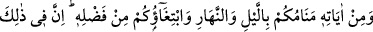
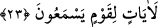

eserinde böyle geçmektedir.
Allah Teâlâ sizi ve bizi bu faydalı ilimlere muvaffak kılsın. Göğüslerimizi feyizlerle
ve sırlarla genişletsin. Ömürlerin sonuna ve bu dünyânın yok oluşuna kadar güneş ile ay
arasında aydınlananlar kılsın.
23. Gece olsun gündüz olsun, uyumanız ve Allâh’ın lütfundan (nasibinizi)
aramanız da O’nun (varlığının) delillerindendir. Gerçekten bunda, işiten bir kavim
için ibretler vardır.
Alışıldığı üzere “Gece olsun” ihtiyaca göre de kaylûle gibi “gündüz olsun,
uyumanız” yâni ecelleriniz gelip çatana kadar hayatınızın devam etmesi için
bedenlerinizin dinlenmesi ve meşguliyetlerinizin kesilmesi demek olan uykunuz “ve
Allâh’ın lütfundan (nasibinizi) aramanız” gece ve gündüzde geçiminizin peşinde
koşmanız “da O’nun (varlığının) delillerindendir.” yâni âhirette kullarına yaptıklarının
karşılığını vermeye Allah Teâlâ’nın kâdir olduğunun işâretlerindendir. Çünkü uyku
çoğunlukla gece, rızık talebi ise gündüz meydana gelse de uyku ve rızık talebi de
geceleyin de gündüz de olabilir.
Burada ölümden sonraki hayata işâret vardır. Çünkü ölümden sonraki hayat, uykudan
uyanma ve geçimini sağlamak için dağılmanın bir benzeridir.
Mesnevî’de der ki:
Uykumuz ölüme kardeş olduğuna göre,
Bu kardeşe bakıp o kardeşi tanı
Âyette gece gündüzden önceye alınmıştır. Çünkü gece Mevlâ’ya hizmet için, gündüz
de yaratılmışlara hizmet içindir. Peygamberlerin (a.s.) mi‘racları gece olmuştur. Bu
yüzden İmam Nîsâbûrî “Gece gündüzden daha fazîletlidir.” demiştir.
Fakir (Bursevî) der ki: “Gece sükûnun/hareketsizliğin mahallidir ki asıl olan odur.
Gündüz ise hareketin mahallidir ki fer‘ olan odur. Nitekim Allah Teâlâ’nın “Ben gizli
bir hazine idim, tanınmayı sevdim de mahlûkâtı yarattım.”[23] sözü de buna işâret
eder. Çünkü yaratma mânevî bir hareketi gerektirir. Yaratmadan önce mahz/sırf sükûn,
yâni zât-ı baht âlemi vardı.
Büyüklerden birisi demiştir ki: “Normal uyanıklık hâlimizde de uykuda olduğumuzu
murâd ettiğini kesin olarak anlamamız için Allah Teâlâ “
(gece ve gündüz)”
buyurmamıştır (‘gece gündüz’ buyurmuştur). Önünüzde bulunan (âhiret hayatına)